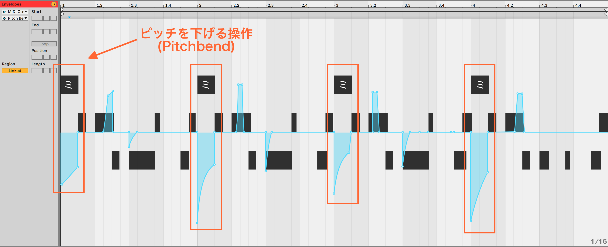
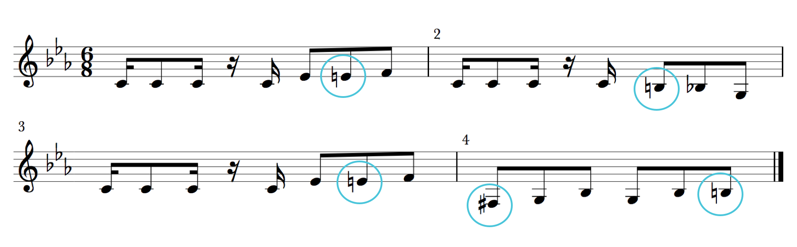

本讲的主题是“领会旋律线条的高级表现技法”。
我们将深入探讨在布鲁斯（Blues）、爵士（Jazz）与摇滚（Rock）等流派中举足轻重的核心利器——“布鲁斯音符（Blue Note / 蓝调音）”。其理论并不深奥晦涩，且极易上手融入实操，是一项能够立竿见影赋能作品的实战型武器。
[gt_radar_chart id=”gt-radar-genrechart” width=”” height=”240″ labels=”J-Pop,Jazz,Classic,Cinematic,Electronic,Pop,Rock” animation_type=”radarar”][gt_chart_data fill_color=”#2060db” stroke_color=”#2060db” data=”60,100,00,5,5,50,80″][/gt_radar_chart]
 1. 笼罩着淡淡忧愁的旋律
1. 笼罩着淡淡忧愁的旋律
音乐中所蕴含的“哀愁与忧郁表达”究竟从何而来？我们本节要探讨的“布鲁斯音符（Blue Note）”，正是这一命题最具代表性的绝妙答案之一。
VIm IIIm IV I
首先是一段简单的 EDM 乐句。模拟人声音色的合成器 Lead 正在周而复始地重复着“Mi-Re-Re-Do-Do-Re”形态的旋律。虽然伴奏是偏暗色调的和弦进行，但若问是否能体会到那种沁入心脾的“忧愁之美”，似乎总觉得差了口气。此时，我们在合成器 Lead 上稍施巧思……
VIm IIIm IV I
感觉如何？虽然只是极其幽微的细节变动，乐句却骤然被笼罩上了一层若隐若现的凄美忧郁。这一微妙的变化究竟发生在何处？其实，正是乐句开头的**“Mi”音的音高（Pitch）被悄然向下拽低了一点点**。

虽然每次下潜的幅度稍有差异，但大体设定在大概将 Mi♭ 与 Mi 按 3:5 进行内分的音高区间。这种无法用规整五线谱记号精确锁定的、宛如“灵魂歌唱”般的微小音高下沉，正是催生出这份蚀骨哀愁的真身所在。

甚至不妨说，这是一种未能完全爬升到位、在平均律之外发生偏离的音高。然而它听起来丝毫没有令人皱眉的“跑调（走音）”之感，反而孕育出了一种令人心旌摇曳的独特哀愁。这种“因音高未能完全扬升到位而自带忧郁色彩的音符”，便被称为布鲁斯音符（Blue Note / 蓝调音）。在大调音阶的范畴中，除了这个 Mi 音之外，通常认为在 Ti 音以及 Sol 音的位置上同样会产生布鲁斯音符。
- 布鲁斯音符（Blue Note） 指在旋律中，Mi、Sol、Ti 音的音高并未完全扬升到位、在不到一个的细微范围内略向下偏沉，从而赋予音乐浓郁哀愁与灵魂韵味的音符。
尤为关键的核心在于：底层的伴奏和弦依然在规规矩矩地奏响着正常的自然大三度（Mi 音）。伴奏与主旋律所使用的音高在此发生了奇妙的解离与错位，碰撞出耐人寻味的摩擦色彩。这种源自根源布鲁斯音乐的独特声响，完全游离于传统欧洲古典乐及早期爵士理论的基本教条之外。正因如此，人们常感叹“传统经典音乐理论很难完美诠释布鲁斯神韵”[1]。在本文中，为了行文方便我们权且将这些下沉的音称作 Mi♭、Sol♭、Ti♭，但请在心中牢记，在最原汁原味的语境下，它们其实是具有微音程性质的鲜活音高。
布鲁斯音符与倾向性
若从核音（Kernel）的角度审视：由于音高发生了下沉变平，布鲁斯音符本质上具有极其强烈的向下进行倾向。因此，由“Mi♭”平滑顺向“Re”、“Ti♭”平滑顺向“La”进行半音化级进解决，是构筑流畅优雅旋律线条最经典的范式。

在现代流行音乐中，Sol♭ 的出现相对少见；而 Mi♭ 则具有压倒性的极高易用性与出场率。
2. 布鲁斯音符的实际经典范例
在流行音乐中，当创作者希望为作品注入源自布鲁斯的浓郁复古、摇滚或摩登爵士韵味时，布鲁斯音符便会大放异彩。让我们通过经典名作来细细品鉴：
米津玄师 –《马与鹿》（馬と鹿）
在副歌后半段唱到“鼻先が触れる呼吸が”（触及鼻息的呼吸）以及“痛みは”（那份痛楚）的地方，旋律重复着“Mi-Re-Do-Do”的动机，而这里的 Mi 音正是极具代表性的布鲁斯音符。更绝妙的是，这种微小的下沉幅度并不是机械划一的，每一次重复时下潜的弧度都富于微妙的游离变化，使得即便是循环往复的动机，也散发出层出不穷的情感波澜。
不仅如此，紧接其后唱到“消えない”（无法消逝）时，尾音的 Mi 却无比坚定清晰地回归并拉长了其原本的自然大三度音高。这种从迷离下沉瞬间挣脱至朗朗晴空的强烈对比，宛如锦上添花，堪称将布鲁斯音符神髓发挥到极致的典范神作。
翻唱版本对比
例如日本搞笑组合东方收音机的藤森慎吾曾翻唱过这首歌，但他的演唱版本中并没有出现布鲁斯音符，这大概是严谨遵循标准律制准确咬音的结果：
虽然差距微乎其微，但正因为缺少了布鲁斯音符那层微妙的微音程摩擦，原曲骨子里那份动人心魄的“凄美与执念”在翻唱版中被稀释了许多。“微偏离的音高反而更具倾倒众生的魅力”——布鲁斯音符正是这样一柄看似极简实则深不可测的利刃，甚至构成了对西方严谨十二平均律体系的深情反叛。
Fantastic Plastic Machine (FPM) – Beautiful Days
全曲通篇贯穿着极其密集的布鲁斯音符。最为直观的是 1:40 处不断连呼“Beautiful”的华彩段落，旋律完全执着沉醉在“Mi♭ → Re → Do”的反复循环中。全曲弥漫着的那种慵懒颓废、似醉非醉且绝不滥俗阳光的独特氛围，其幕后最大功臣正是布鲁斯音符。
aiko –《初恋》（初恋）
在副歌唱到“絶えず絶えず絶えず”（连绵不绝）时，惊艳地现身了相对罕见的“Ti”的布鲁斯音符。作为深受爵士熏陶的唱作人，aiko 作品中那种标志性的都市摩登感，其核心秘诀之一便在于对布鲁斯音符的精妙化用。
演奏与实现手法
布鲁斯音符下潜的深度决定了其风格化露骨程度的强弱。在现代数字音频工作站（DAW/DTM）中，我们通常借助**弯音轮（Pitch Bend）**来雕琢这一质感。而在真实声学乐器中，萨克斯、长号等管乐天生具备压音与滑音技巧，吉他则可以通过推弦（Bending / Choking）与微颤音轻松实现。 面对钢琴这种无法连续弯音的离散型键盘乐器，通常的做法是将 Mi 与 Mi♭ 瞬间同时按下，或者以超短前倚音（装饰音）滑奏敲击，从而模拟出“拟态布鲁斯音符”：
在此情境下，通过调节变音构成音的混杂配比、按键强弱与时值长短，便能随心所欲调配出不同浓度的布鲁斯忧郁风味。
3. 布鲁斯音乐的现代乐理建模
现代流行音乐理论的原型主要孕育自爵士乐理论，而爵士乐最根本的母体源流之一正是布鲁斯。因此，现代爵士理论为了将这套浸透着即兴歌唱之韵的布鲁斯世界收编整理，做出了卓绝的理论化推演。 从本质上讲，由于伴奏和弦与旋律线条在调式色彩上相互错位分离、且伴随着无法被半音系统简单量化的微妙微音程，布鲁斯原本是抗拒被收编进传统理论框框的。但为了将这种动人的音乐性传授给后世，理论化建模势在必行。
作为布鲁斯理论构建的起点，理论界最经典的阐释是将布鲁斯音符解读为：“在大调和弦进行之上，叠置演奏小调五声音阶（Minor Pentatonic Scale）”[2]。

小调五声音阶已在第 I 章中登场，通俗说来就是“去除了四级与七级音的小调音阶”。将大调伴奏中赫然闯入的降号音，解构为“大调与小调音阶的双重叠合”，是这一理论模型的精髓。
虽然将生动玄妙的微音程扁平化为“用 Mi♭ 代替 Mi”，难免略微磨损了音乐中最深邃的歌唱灵魂，但对于建立条理分明的乐理体系而言，这无疑是最行之有效的模型化妥协。
布鲁斯音阶（Blues Scale）
然而，小调五声音阶（1, ♭3, 4, 5, ♭7）中并未包含 Sol 的降号音。为了将三枚核心布鲁斯音符一网打尽，理论界正式定义了在小调五声音阶中额外加入 ♭5（Sol♭/Fa♯）的**“布鲁斯音阶（Blues Scale）”**[3]：

关于 Sol♭，常在记谱中被写作 Fa♯；正如前面所言，虽然作为布鲁斯音符它具有下行倾向，但在演奏实践中它也频繁被视作经过变音顺势上行滑向 Sol。对比试听便能明了：随着 Fa♯ 的加入，旋律的色彩摩擦与张力显著加深。
综合布鲁斯音阶（Blue Note Scale）
在实际演奏的高潮环节，乐手往往渴望同时兼顾自然音与降号音，在两者之间自由穿梭。将自然大调音阶的 7 个自然音，与 3 个布鲁斯音符无缝拼合所形成的包含 10 个音级的超级音阶，通常被称作**“蓝调音符音阶 / 综合布鲁斯音阶（Blue Note Scale）”**[4]。

只要扎实掌握这一音阶，创作者便能游刃有余地在基础大调的明朗纯粹与布鲁斯的浓郁醇厚之间随心所欲调配张力。
仅用 C 综合布鲁斯音阶呈现的爵士即兴演奏
上面正是借助综合布鲁斯音阶展现的纯正爵士风范。可以说，它是现代音乐人“瞬间收获高级爵士风味”的开挂级神器。
摇滚乐的绝配利刃
这种既非纯大调亦非纯小调的桀骜声响，在传统古典和声学中被视为异端，但恰恰与以反叛与对抗精神为灵魂的摇滚乐达成了完美的精神契合。
前卫摇滚巨擘 King Crimson（深红之王）的传世名曲《21st Century Schizoid Man》（21世纪精神分裂狂），其著名的标志性吉他 Riff 与疯狂 Solo 均深度取材于布鲁斯音阶。作品大体锚定在沉重的小调根基上，但在关键骨节处穿插自然音 Mi、Ti 以及尖锐刺耳的 Fa♯，撕扯出源自布鲁斯与自由爵士的末日混沌与狂暴力量。

King Crimson《21st Century Schizoid Man》掌握一套全新的音阶体系，就等于为自己的创作灵魂装备了一套崭新的表达维度。在第 III 章中，我们将继续全面拓宽关于各类高级调式与奇异音阶的疆土。
总结
- 在 Mi、Sol、Ti 的音高在半音或更微小的区间内向下偏移下潜时所呈现出的忧郁凄美音符，被称为布鲁斯音符（Blue Note）。
- 在现代流行音乐中，降三级（Mi♭）具有压倒性的极高实用度与普适性。
- 爵士理论将这一现象从“在大调伴奏上叠置小调五声音阶”起步进行了系统的理论化收编与拓展。